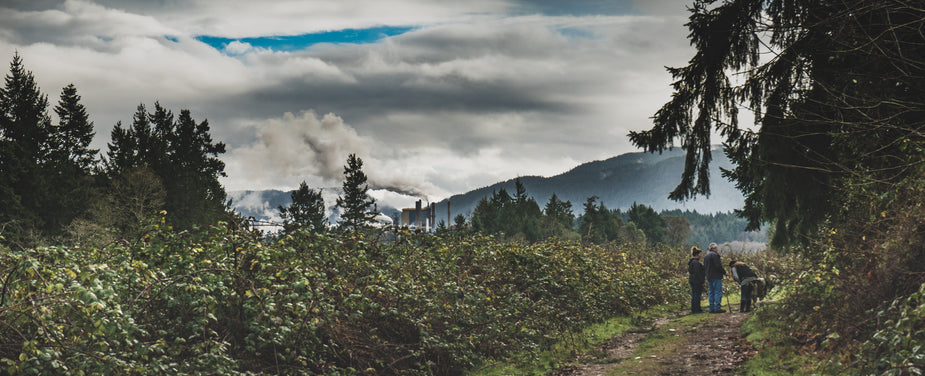

Three routes, from an easy lakeside loop to a steep summit climb. Pick the one that matches the day you have, not the day you wish you had.

Four kilometres, almost flat, and the surface stays firm after rain. Most people walk it in about an hour. It is the only route here that works with a stroller.
The trailhead is signed from the main parking area. Water is available at the picnic shelter at the halfway point, which is also the only shade on the route.
Nine kilometres with a steady climb through mixed forest before the treeline opens up. Budget three hours, more if you stop at the lookout.
The footing turns to loose rock for the last kilometre. Boots are worth it here, and the wind on the exposed section is colder than the forecast suggests.
Twelve kilometres and eight hundred metres of elevation, with the last section on switchbacks cut into the north face. This is a full day, not an afternoon.
Start early. The trail is unshaded above the treeline and there is no water past the second creek crossing, so carry everything you need from the bottom.
Tell someone your route and when you expect to be back. Cell coverage is unreliable in the valley and absent on the north face.
Trail conditions change quickly in spring. Check the notice board at the parking area before you commit to the longer routes.